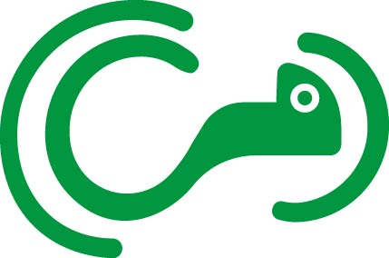

Who is behind XYZ?
XYZ is an initiative created by Josmar Hinojosa, a digital design student. The name XYZ refers to the X, Y, and Z axes used in 3D software, symbolizing adaptability and movement in multiple directions. Just as a chameleon adapts to its environment, XYZ adapts to the needs of companies, offering personalized and versatile solutions.
